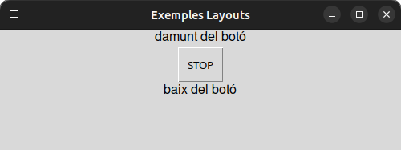
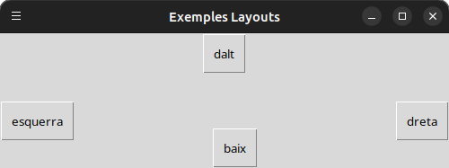
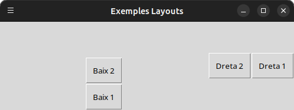
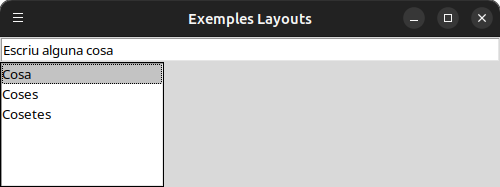
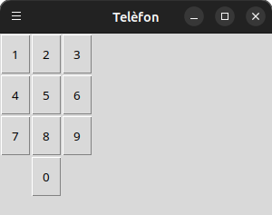

15 Layouts
El disseny (layout) de la teua interfície gràfica és la manera com s'organitzen els ginys dins de la finestra.
15.1 Posicionament
Els ginys es poden organitzar en «contenidors» (p. e. App, Window, Box) amb qualsevol d'aquests dos posicionaments:
auto: els ginys es col·loquen automàticamentgrid: tu especifiques en quina posició d'una graella ha d'anar cada giny
El posicionament s'estableix amb el paràmetre layout del contenidor, per exemple:
app = App(layout="auto")
app = App(layout="grid")
Si no s'especifica el paràmetre layout, s'utilitza auto per defecte.
Posicionament auto
Tots els ginys s'organitzen segons l'ordre en què es creen i s'alineen al centre. Per exemple, el codi següent crea un botó entre dos ginys Text, un damunt de l'altre.
Text(app, text = "damunt del botó")
PushButton(app, text = "STOP")
Text(app, text = "baix del botó")

Alineació
Els ginys es poden alinear a dalt (top), a baix (bottom), a l'esquerra (left) o a la dreta (right) mitjançant la propietat align en crear-los.
Alinear un giny fa que quede «apegat» a eixe costat del contenidor, per exemple:
PushButton(app, text = "dalt", align="top")
PushButton(app, text = "esquerra", align="left")
PushButton(app, text = "dreta", align="right")
PushButton(app, text = "baix", align="bottom")

Si alinees diversos ginys al mateix costat del contenidor, s'apilaran:
PushButton(app, text = "Dreta 1", align="right")
PushButton(app, text = "Dreta 2", align="right")
PushButton(app, text = "Baix 1", align="bottom")
PushButton(app, text = "Baix 2", align="bottom")

Els ginys s'apilen segons l'ordre de creació, de manera que el giny que es crea primer queda més prop de la vora en la direcció indicada.
Omplir (fill)
També es pot fer que els ginys «ompliguen» tot l'espai disponible establint els paràmetres width i height al valor fill.
TextBox(app, text="Escriu alguna cosa", width="fill")
ListBox(app, items=["Cosa", "Coses", "Cosetes"], height="fill", align="left")

El TextBox ocupa tota l'amplària del contenidor gràcies al width="fill", mentre que el ListBox ocupa tot el costat esquerre degut a height="fill", align="left"
Nota: Utilitzar fill pot no tindre sempre l'efecte que esperes, ja que és el sistema operatiu qui reparteix l'espai de la pantalla.
Disseny en graella (grid)
El disseny grid et permet situar els ginys en una graella virtual.
Quan crees un giny, hauràs de passar-li un paràmetre addicional anomenat grid, que és una llista amb les coordenades [x,y] on vols que aparega el giny.
No cal especificar l'amplària ni l'altura de la graella: s'ampliarà segons les coordenades que indiques per a cada giny. Això sí, les cel·les de la graella que no contenen cap objecte no tindran ni altura ni amplària.
Això és molt útil quan vols crear interfícies en què els ginys queden alineats. Per exemple, pots crear un teclat numèric de telèfon.
app = App(title = "Telèfon", height=200, width=300, layout="grid")
button1 = PushButton(app, text="1", grid=[0,0])
button2 = PushButton(app, text="2", grid=[1,0])
button3 = PushButton(app, text="3", grid=[2,0])
button4 = PushButton(app, text="4", grid=[0,1])
button5 = PushButton(app, text="5", grid=[1,1])
button6 = PushButton(app, text="6", grid=[2,1])
button7 = PushButton(app, text="7", grid=[0,2])
button8 = PushButton(app, text="8", grid=[1,2])
button9 = PushButton(app, text="9", grid=[2,2])
button0 = PushButton(app, text="0", grid=[1,3])

També pots alinear els ginys dins de la graella, cosa que resulta útil quan crees un formulari:

from guizero import App, Text, TextBox
app = App(layout="grid")
name_label = Text(app, text="Name", grid=[0,0], align="left")
name = TextBox(app, grid=[1,0])
surname_label = Text(app, text="Surname", grid=[0,1], align="left")
surname = TextBox(app, grid=[1,1])
dob_label = Text(app, text="Date of Birth", grid=[0,2], align="left")
dob = TextBox(app, grid=[1,2])
app.display()
Ocupar diverses columnes o files
Es pot fer que els ginys ocupen diverses columnes o files indicant l'extensió dins del paràmetre grid. Aquests valors són opcionals, però, si s'especifiquen, cal incloure'ls tots amb el format [x,y,xspan,yspan].
L'exemple següent mostra un giny Text situat a 0,1 que ocupa dues columnes (x) i una fila (y):
text = Text(app, text="Hello world", grid=[0,1,2,1])
Aquest mètode de disseny es pot utilitzar per a incloure ginys de diferents mides disposats els uns al costat dels altres.
from guizero import App, Picture
app = App(layout="grid")
picture1 = Picture(app, image="std1.gif", grid=[0,0])
picture2 = Picture(app, image="std2.gif", grid=[1,0])
picture3 = Picture(app, image="tall1.gif", grid=[2,0,1,2])
picture4 = Picture(app, image="wide1.gif", grid=[0,1,2,1])
app.display()

Caixes
Amb el giny Box pots dividir la teua interfície en diferents seccions i, així, organitzar-la de la manera que vulgues.

Si volgueres crear un títol a la cantonada superior esquerra de la interfície, podries utilitzar un Box que òmpliga la part superior de l'App i col·locar-hi dins un giny Text alineat a l'esquerra (left).
from guizero import App, Box, Text
app = App()
title_box = Box(app, width="fill", align="top")
title = Text(title_box, text="title", align="left")
app.display()

Pot ser-te més fàcil dissenyar la interfície si les caixes tenen vora, cosa que es pot aconseguir establint el paràmetre border de Box a True.
title_box = Box(app, width="fill", align="top", border=True)

Es pot fer servir un mètode semblant per a posar els botons «OK» i «Cancel» a la part inferior dreta de la interfície. Recorda que els ginys s'apilen a la dreta segons l'ordre de creació, per això el botó de cancel·lar es crea primer.
from guizero import App, Box, PushButton
app = App()
buttons_box = Box(app, width="fill", align="bottom")
cancel = PushButton(buttons_box, text="Cancel", align="right")
ok = PushButton(buttons_box, text="OK", align="right")
app.display()

Nota: Pots posar un Box dins d'un altre Box, la qual cosa et permet superposar caixes i situar els ginys on vulgues.
Consell: Quan crees una interfície, et pot resultar més fàcil dissenyar-la primer en paper i anotar on aniran situades les caixes.

Malauradament, encara que pots posar una caixa dins d'una altra caixa, guizero no permet enviar-se-la per correu a un mateix ni fer-la miques amb un martell ;)
Font: guizero - Layouts. Documentació original construïda amb MkDocs.